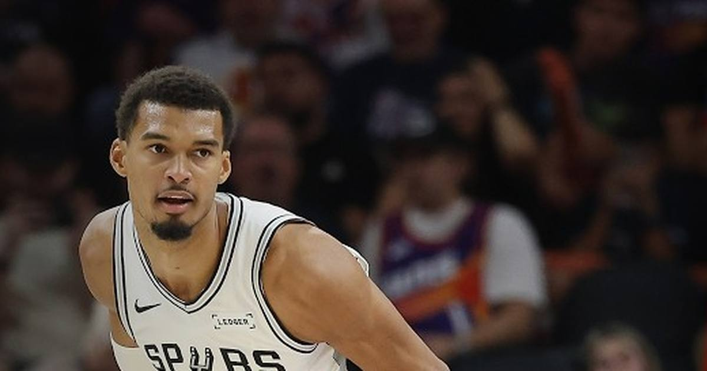

Wembanyama drops 40 with 9 blocks in 25 minutes — and the Spurs just keep winning
Victor Wembanyama scored 40 points with 11 rebounds and 9 blocks in just 25 minutes as the Spurs beat the Suns 122-96 for their ninth straight win — a line only one other player in NBA history has ever produced that fast.

Disclosure: this post contains affiliate links. I earn a commission on qualifying purchases.
The night
Victor Wembanyama played 25 minutes and 21 seconds on Monday night. That was enough for 40 points on 15-of-19 shooting, 11 rebounds, 9 blocks, 3 assists, one turnover and a plus-30. The San Antonio Spurs beat the Phoenix Suns 122-96 at Mortgage Matchup Center for their ninth straight win, moving to 9-2 — 5-0 on the road — while the Suns fell to 6-5.
Devin Booker scored 32 for Phoenix and it didn't matter. Dylan Harper added 17 points, 5 rebounds and 4 assists for San Antonio, and the Spurs never really let the Suns breathe. It was Wembanyama's third 40-point game in his first 11 appearances of the season — five days after the 52-point, 24-rebound, 8-assist night against Dallas.
Coach Mitch Johnson said afterward that Wembanyama is "allowing the game to unfold" rather than forcing it. That's a polite way of describing a 7-foot-4 player who took 19 shots in 25 minutes and made 15 of them, then blocked nine shots on the other end.
The history
The minutes are what make this one absurd. Wembanyama is the second player in NBA history to score 40 points in 25 minutes or fewer. The other was Sleepy Floyd, on February 26, 1991. That's a 35-year gap.
The blocks make it rarer still. He's the second player ever with multiple 40-point, 10-rebound, 8-block games in a single season. The first was Wilt Chamberlain. He also became the first player to post 40 points, 11 rebounds and 8-plus blocks at Mortgage Matchup Center — and per Stathead, the only other player with a 40/11/8-plus-blocks game involving the Suns was Elvin Hayes, who went for 40 points, 18 rebounds and 13 blocks against Phoenix in 1968.
Blocks have only been an official stat since 1973-74, which is worth remembering whenever a number like this shows up: the record book starts in the mid-70s, and Wembanyama is already rewriting the parts of it that involve the most complete big-man games ever played. The Spurs visit Chicago on Wednesday, and at this point the only question is what the next one looks like.
Watch
Source: San Antonio Spurs vs Phoenix Suns Full Game Highlights | Nov 9, 2026 — NBA. The full game highlights from Wembanyama's 40-point, 9-block night in Phoenix.
Gear up: Fanatics